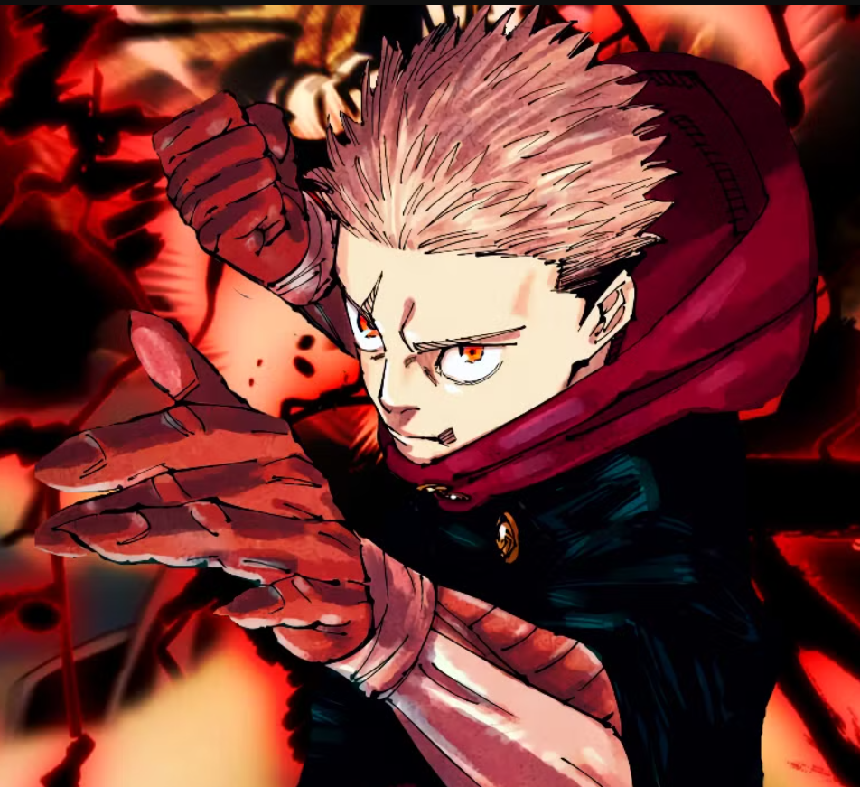
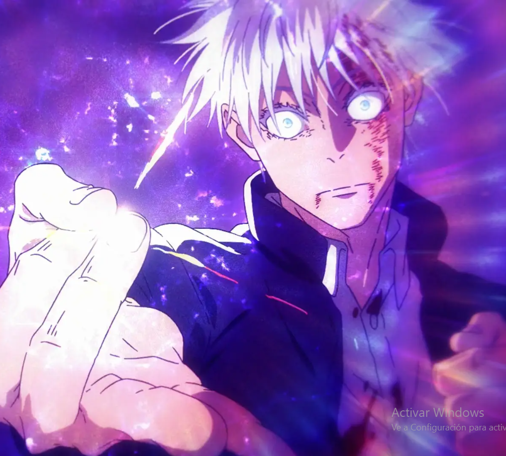
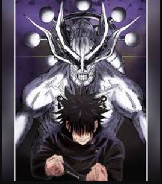
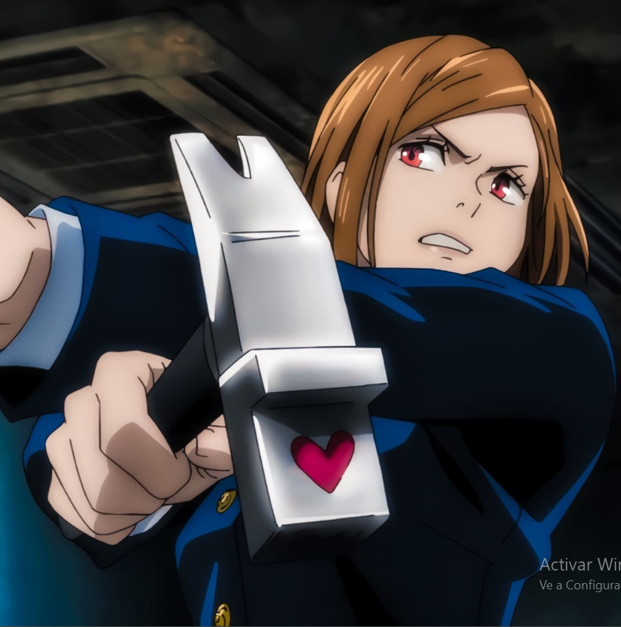
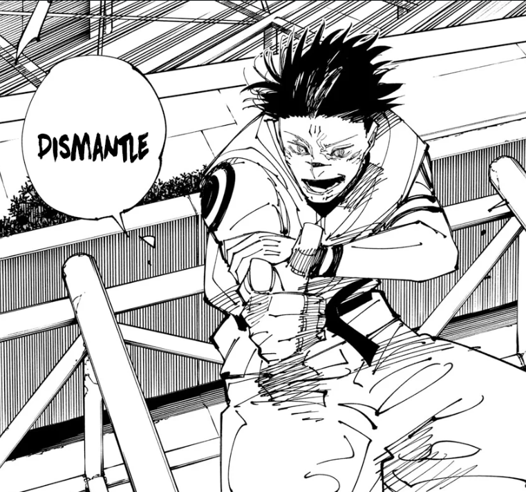

Yuji Itadori tiene una fuerza física extraordinaria, lo que le permite realizar hazañas sobrehumanas en combate. Al convertirse en el anfitrión de Ryomen Sukuna, Yuji adquiere acceso a una parte del poder de Sukuna, lo que le otorga una mayor energía maldita y resistencia. Sin embargo, esto también significa que debe lidiar con la influencia destructiva de Sukuna. A medida que avanza la historia, Yuji entrena en la Escuela Técnica de Magia Jujutsu, aprendiendo a utilizar técnicas de jujutsu y a controlar su energía maldita. Su estilo de lucha se centra en el combate cuerpo a cuerpo, donde combina su fuerza física con sus habilidades jujutsu para derrotar a las maldiciones.

Explicacion de sus Poderes
Yuji Itadori
El anfitrión de Sukuna
Satoru Gojo
El hechicero más fuerte
Satoru Gojo es conocido por su "Técnica de Infinito", que le permite crear una barrera de energía que ralentiza y detiene cualquier ataque que se dirija hacia él. Esta técnica utiliza un concepto de espacio infinito, donde los ataques nunca llegan a él. Gojo también utiliza la "Expansión de Dominio", una técnica que le permite aumentar su control sobre el campo de batalla. En su "Expansión de Dominio", Gojo desata una técnica devastadora conocida como "Cielo Infinito", que puede desorientar y abrumar a sus oponentes, dándole la ventaja en combate. Su habilidad para leer el combate y anticipar los movimientos del enemigo lo convierte en un adversario casi invencible.
Megumi Fushiguro
Maestro de shikigami
Megumi Fushiguro tiene la capacidad de invocar shikigami, que son espíritus familiares que utiliza en combate. Su técnica de invocación le permite llamar a diferentes shikigami, cada uno con habilidades únicas, como el "Perro del Demonio" y "Nue". Esta versatilidad le permite adaptarse a diferentes situaciones en batalla. Además, Megumi tiene un gran potencial de energía maldita, lo que le permite ejecutar técnicas más avanzadas a medida que avanza la historia. Su "Expansión de Dominio" le permite lanzar un ataque de área de efecto que aumenta su poder y le da una ventaja estratégica sobre sus oponentes.
Nobara Kugisaki
La manipuladora
Nobara Kugisaki utiliza técnicas de manipulación de muñecos y herramientas malditas para combatir maldiciones. Su técnica más distintiva implica el uso de un martillo y clavos, que le permiten atacar a distancia. Al clavar los clavos en objetos o muñecos, puede transferir su energía maldita y causar daño a las maldiciones, incluso si no están físicamente presentes. Esta técnica no solo le permite atacar, sino que también puede utilizarse para crear trampas o debilitar a los enemigos. Su determinación y fuerte voluntad la convierten en una guerrera formidable, y su enfoque estratégico en combate la hace destacar entre los demás hechiceros.
Ryomen Sukuna
La maldición temida
Ryomen Sukuna es una de las maldiciones más poderosas y temidas en Jujutsu Kaisen. Como el "Rey de las Malediciones", Sukuna tiene habilidades excepcionales para manipular energía maldita, lo que le permite realizar técnicas devastadoras y de gran alcance. Puede regenerarse rápidamente, lo que lo hace extremadamente difícil de derrotar. Sukuna también posee un intelecto agudo y una naturaleza manipuladora, utilizando su astucia en combate para superar a sus oponentes. Su conexión con Yuji Itadori le permite influir en su anfitrión, lo que genera tensiones constantes en la historia, ya que Sukuna busca aprovechar la situación a su favor mientras Yuji lucha por mantener el control.
